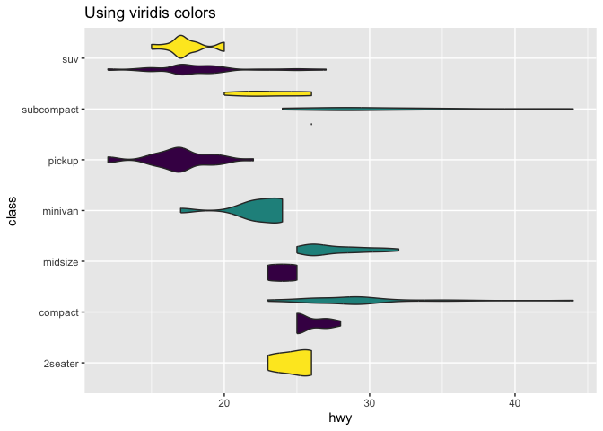
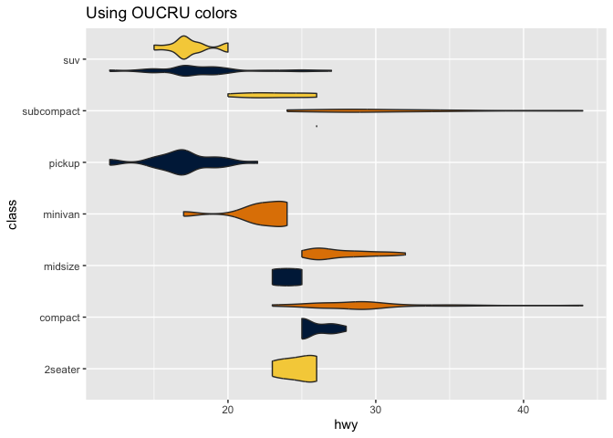

Collection of helper and miscellaneous functions used for and by the Oxford University Clinical Research Unit (OUCRU), Vietnam
Installation
You can install the development version of oucru from GitHub with:
# install.packages("pak")
pak::pak("OUCRU-Modelling/oucru")Example
OUCRU colors and palette
Basic example for using OUCRU color palette for ggplot2
library(ggplot2)
library(oucru)
p <- ggplot(mpg, aes(hwy, class, fill = drv)) +
geom_violin(show.legend = FALSE)
# typical figure with viridis colors
p +
scale_fill_viridis_d() +
ggtitle("Using viridis colors")
# use OUCRU main color palette
p +
scale_fill_oucru_d(palette = "main") +
ggtitle("Using OUCRU colors")